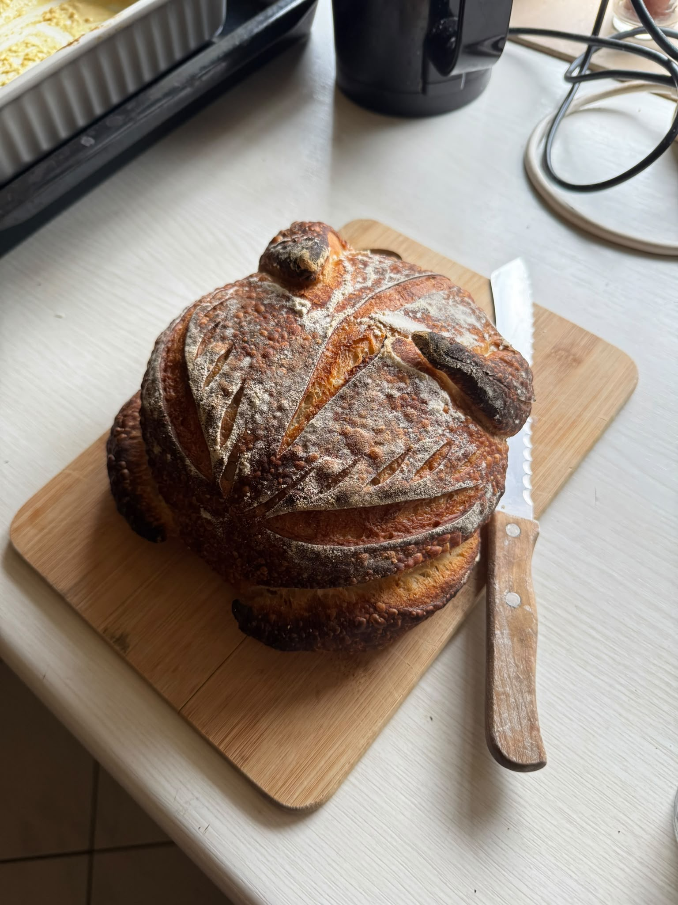
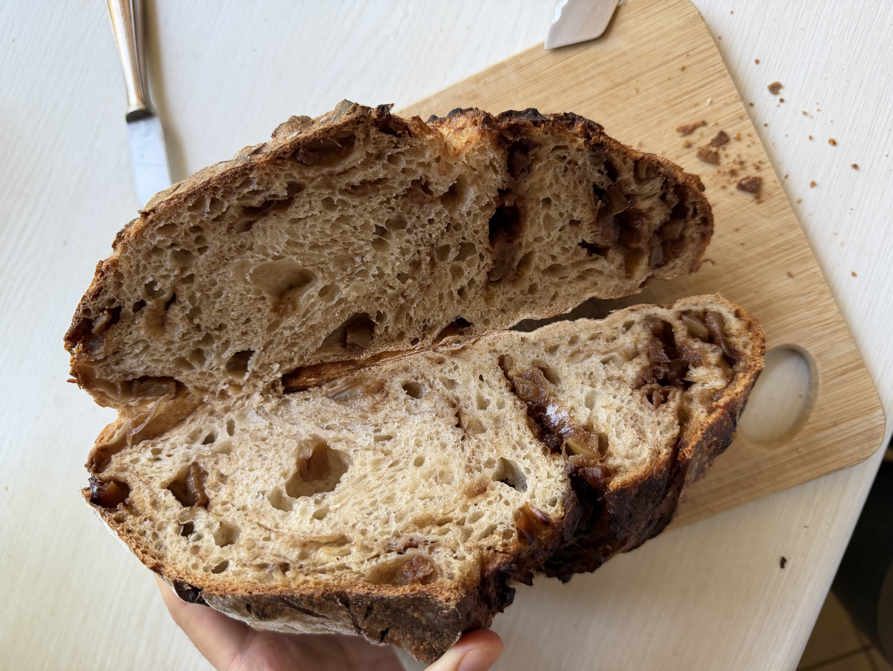

If you read my travel page you might have noticed that I
enjoy food a lot. Not only eating but also making. So here I will
share some experiences and recipes. Since I bake a lot, I have dedicated
another page just for baking!
Food Experiments
To start off, I will talk about my adventure of making my own foods.
While reading through the pages, you will come to realize a lot, that I have an almost obsessive relationship
with fermenting foods. I don't know why but it's incredibly addicting.
Especially considering how much simpler it is than most people think.
Take sourdough!

This is what really got me into making my own foods from scratch.
You literally mix
flour and water then let it sit on the counter at room temperature and wait for the
natural yeast to grow (while feeding it regularly). After a week you can start baking your own breads!

And the most amazing part
is that store-bought stuff just can't compare with making it at home. It's tastier, healthier and cheaper.
I cannot find a reason not to start baking your own breads at home.
One of my other
experiments I recently started is my ginger bug. You just chop up some ginger, put it
in a jar filled with water and mix in some sugar. Wait a few days again and you got a functioning ginger bug!
With this you can create your own probiotic sodas! You use some drink containing sugar (juice, syrup) and add a bit
of your ginger bug into it. After two days, you got an incredibly refreshing carbonated drink with a unique taste.
The best part is that the ginger bug eats all that sugar to convert it into carbondioxide. So, there isn't actually
as much of a sugar content compared to plain juice or sodas you get in the store. And its got healthy bacteria in it!
I also started making my own butter fermented with yogurt. Though this isn't as home-made as the others. You buy yogurt
(with living cultures) and heavy cream. Mix some spoons of yogurt into the heavy cream and let it sit at room temperature
until it has thickened. Then whip it up into butter. Boom, you've got yourself butter and delicious thick buttermilk - not that watery
stuff from the store (both containing healthy bacteria!).